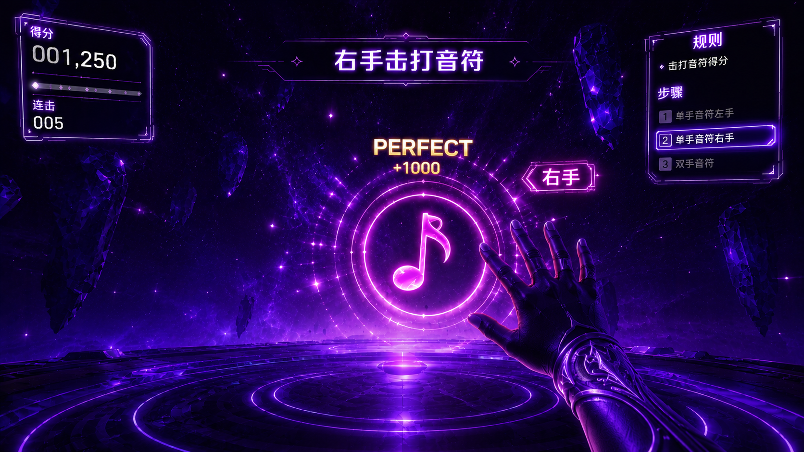
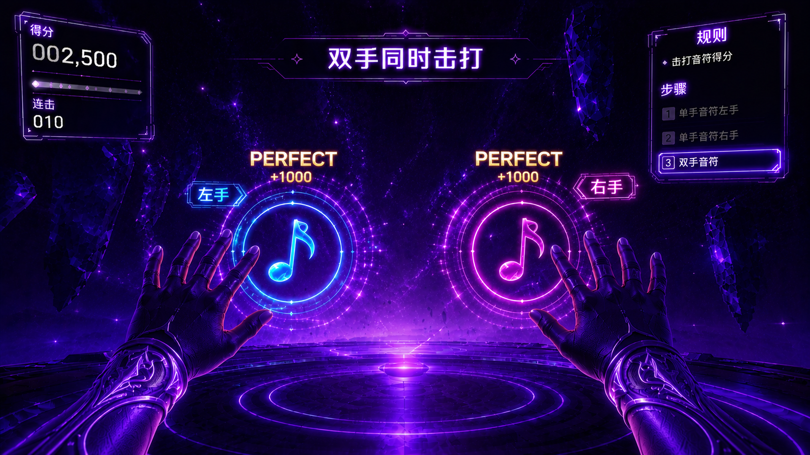
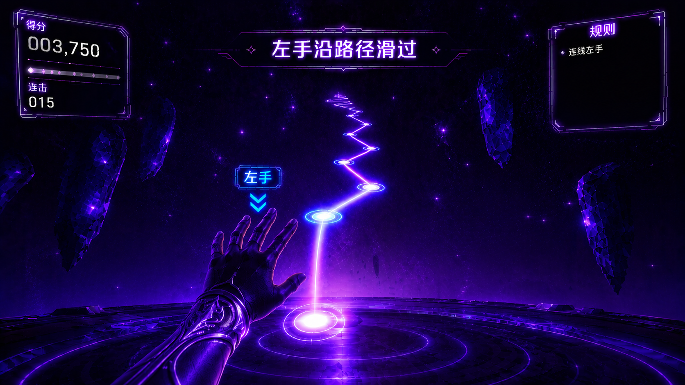
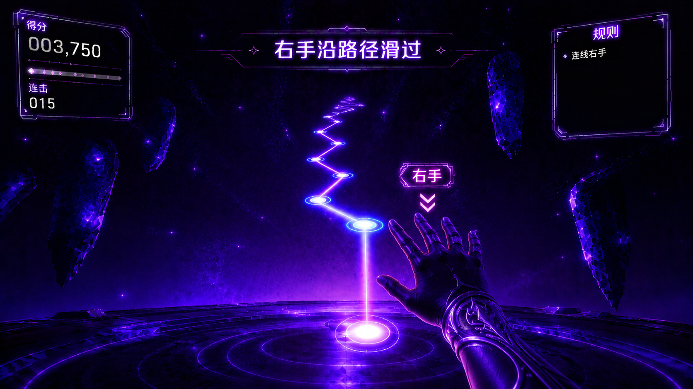
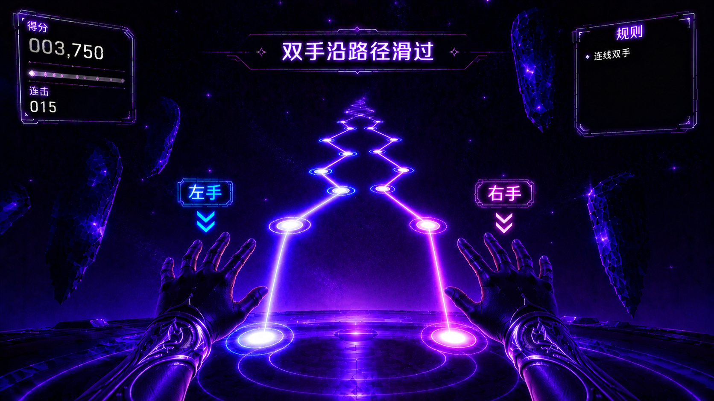
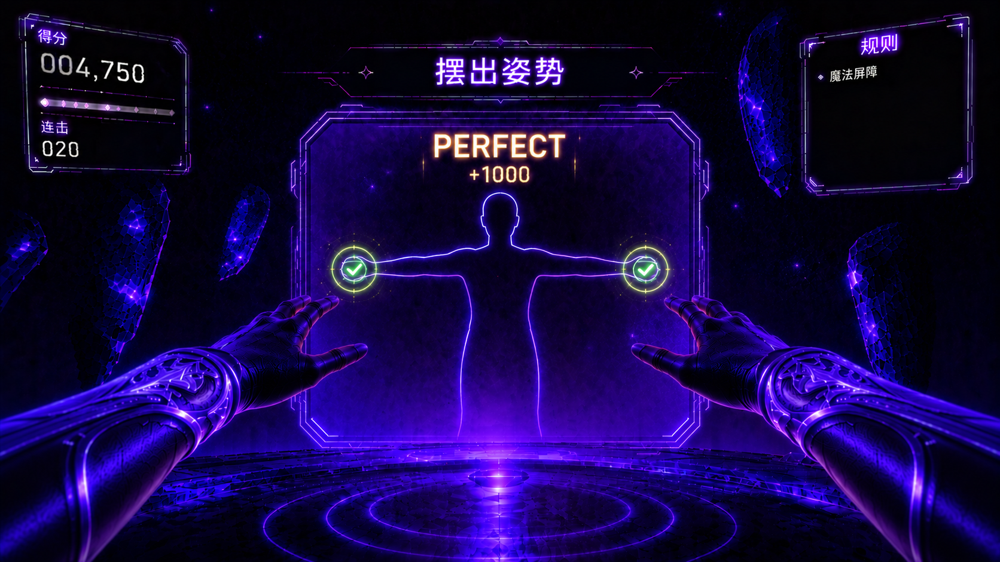
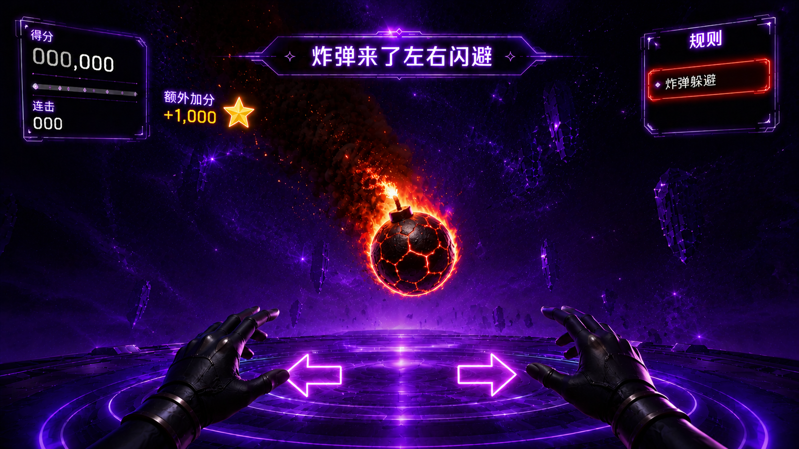

步骤1·场景介绍 参考图
欢迎来到魔法派对！这是一个音乐节奏游戏，你需要跟随节拍击打飞来的音符、沿着光路连线、并摆出各种姿态。准备好用你的双手创造魔法了吗？
🔊 语音播报
进入语：魔法派对！跟着音乐的节拍——握拳竖起大拇指，击打飞来的音符，像按喇叭一样。手指沿着光路滑过去，看准姿态墙摆姿势。用你的双手创造魔法，开跳！









| 姿势 | 左手 | 右手 |
|---|---|---|
| 双手平举 | 左上方 | 右上方 |
| 双手上举 | 居中上 | 居中上 |
| 左手举起 | 左上方 | 右下方 |
| 右手举起 | 左下方 | 右上方 |
以下为「魔法派对」场景介绍及全局 UI 所需的美术资源清单，供美术团队制作参考。VR 第一人称视角，游戏引擎实时渲染风格，整体追求深紫魔法 + 节奏律动 + 霓虹美学的视觉调性。
| 类别 | 资源 | 制作说明 |
|---|---|---|
| 空间主体 | 深紫色魔法空间 | 无边界的深渊式空间，背景由深紫到暗黑的径向渐变构成，中心略亮、四周渐暗。空中大量漂浮星尘粒子缓慢旋转，呈银河旋涡感。无地面、无墙壁，玩家仿佛悬浮于宇宙魔法空间之中 |
| 星尘粒子 | 漂浮光点系统 | 空间内散布大量大小不一的星尘粒子（1~5px），颜色为紫色系渐变（淡紫→品红→冷白），缓慢飘浮旋转，部分粒子有微弱的拖尾光晕。粒子密度适中，不遮挡前方飞来的游戏元素 |
| 节拍光效 | 环境脉冲 | 空间背景随着 BGM 节拍有微弱的环境光脉冲——每次重拍时背景亮度微微提升（约 10% 增幅），营造空间「随音乐呼吸」的沉浸感 |
| 类别 | 资源 | 制作说明 |
|---|---|---|
| 音符 | 圆形音符元素 | 直径约 40cm 的圆形音符，主体为半透明霓虹材质。音符从远处沿正前方由小变大飞来，飞行时间固定 3.5 秒。音符正面中央为点赞手势图标（👍握拳伸出大拇指的样式），边缘有发光环脉动。左手音符标记蓝色 👈 标签，右手音符标记粉色 👉 标签，双手音符两个同时出现各带对应标签 |
| 连线路径 | 霓虹光路 | 空中出现一条弯曲的发光路径（霓虹蓝紫渐变），路径由一系列小光点连成虚线或实线光带，长约 1.5~2m。路径起点有对应的左右手标签脉冲闪烁。玩家手沿路径滑动时，手经过的段落依次点亮变白，滑完全程后终点爆发完成粒子特效 |
| 双连线路径 | 双光路 | 两条不同形状的路径同时出现（一左一右），各自带有对应标签，与单连线视觉规格一致。两条路径的颜色略有区分——左手路径偏蓝紫、右手路径偏粉紫 |
| 姿态墙 | 镂空人形剪影墙 | 一面半透明的矩形光墙从远处飞来（3.5 秒），墙中央是一个镂空的人体轮廓剪影，整体霓虹紫色边框发光。双手位置有两个金色标记点脉冲闪烁，提示玩家将手对齐。玩家摆出对应姿势后标记点变绿确认，评级文字（Perfect/Good/Miss）弹出 |
| 障碍物 | 炸弹/障碍 | 暗铁色外壳带有红色裂纹熔岩纹路的炸弹，表面有橙红色火焰包裹燃烧，尾部拖曳黑烟和火星粒子。从远处正前方飞来，飞行轨迹和速度（3.5 秒）与音符/姿态墙一致。用于躲避教学，玩家被击中扣血，成功闪避加分 |
| 类别 | 资源 | 制作说明 |
|---|---|---|
| 顶部提示板 | 文字提示板 | 屏幕顶部中央，半透明深色圆角矩形底（80% 不透明黑底 + 霓虹紫微弱描边），白色文字居中。进入场景时从上方滑入 + 淡入动画（约 0.5 秒） |
| 右侧步骤面板 | 垂直步骤列表 | 屏幕右侧纵向排列，仅当前步骤高亮（霓虹紫色发光边框 + 文字高亮），其余步骤暗隐。每步完成打 ✅ 并消失 |
| 得分区域 | HUD 得分显示 | 屏幕右上角显示当前得分数字和连击数（Combo），数字变化时有放大 + 回弹动画和金色微光。Combo 数达到一定数值时数字变为彩虹渐变特效 |
| 手势提示 | 左右手图标 | 屏幕中下方两侧各有一个半透明手形图标（👈 左 / 👉 右），当前需要操作的手图标高亮脉冲，另一侧暗隐。双手操作时两侧同时高亮 |
| 类别 | 资源 | 制作说明 |
|---|---|---|
| 音符命中 | 涟漪波纹扩散 | 手击中音符瞬间，碰撞点向外扩散圆形涟漪波纹（霓虹紫光），约 0.5 秒完成扩散并消散。同时音符碎裂为星尘粒子向外飞散 |
| 评级弹出 | 评级文字特效 | 命中判定后，评级文字（Perfect / Good / Miss）从命中点向上浮出，Perfect 为金色带光晕，Good 为绿色，Miss 为灰色。文字上浮过程中逐渐放大再缩小 + 淡出，持续约 1 秒 |
| 连线完成 | 路径点亮 + 终点爆发 | 手指沿路径滑动时，已滑过的路径段从霓虹紫变为亮白色并留有短暂残光（约 0.3 秒后恢复）。滑到终点时终点位置爆发星尘粒子向上飞散，同时弹出评级文字 |
| 姿态匹配 | 标记点变绿 + 轮廓闪白 | 玩家双手对齐金色标记点时，标记点从金色脉冲变为绿色常亮，同时整个镂空轮廓短暂闪白一次（约 0.3 秒），确认匹配成功。之后姿态墙碎裂消散，弹出评级文字 |
| 炸弹躲避 | 炸弹爆炸 / 闪避成功 | 玩家被炸弹击中时，炸弹原地爆炸——橙红色火焰粒子爆发 + 屏幕震动 + 红色闪屏（约 0.5 秒），HUD 扣血。成功闪避时，炸弹从玩家身旁飞过后方爆炸（远处爆炸光效），屏幕弹出 "+1" 加分文字 |
| 用途 | 色值参考 | 说明 |
|---|---|---|
| 场景主调 | 深紫/暗黑 #1a0033 ~ #2d004d | 空间背景径向渐变主要色域 |
| 霓虹紫 | 紫→品红 #8e44ad → #c39bd3 | 音符发光环、连线路径主色、姿态墙边框、UI 高亮 |
| 左手标记 | 蓝 #3498db / #5dade2 | 左手音符标签、左手路径色、手势提示左 |
| 右手标记 | 粉 #e91e63 / #f8bbd0 | 右手音符标签、右手路径色、手势提示右 |
| 完美评级 | 金 #f1c40f | Perfect 文字、标记点匹配成功 |
| 良好评级 | 绿 #2ecc71 | Good 文字、标记点变绿 |
| 失误评级 | 灰 #95a5a6 | Miss 文字 |
| 炸弹 | 暗铁红 #c0392b → 橙焰 #e67e22 | 炸弹外壳裂纹、火焰包裹 |
| UI 底色 | 半透明黑 rgba(0,0,0,0.8) | 提示板、步骤面板底衬 |
| UI 高亮 | 霓虹紫 #8e44ad 发光 | 当前步骤边框 |
VR 第一人称视角 + 游戏引擎实时渲染；视觉基调类似《Beat Saber》的霓虹美学 +《Synth Riders》的漂浮沉浸感；深紫色深渊空间中漂浮的霓虹元素为核心视觉记忆点；四种玩法元素（音符/连线/姿态墙/炸弹）需在色彩和形态上各自独立可辨，但保持统一的霓虹光效语言；背景 BGM 节拍与视觉脉冲同步，增强节奏感；核心设计原则：元素从远到近的 3.5 秒飞行轨迹清晰、左右手区分一目了然、评级反馈即时且富有满足感。